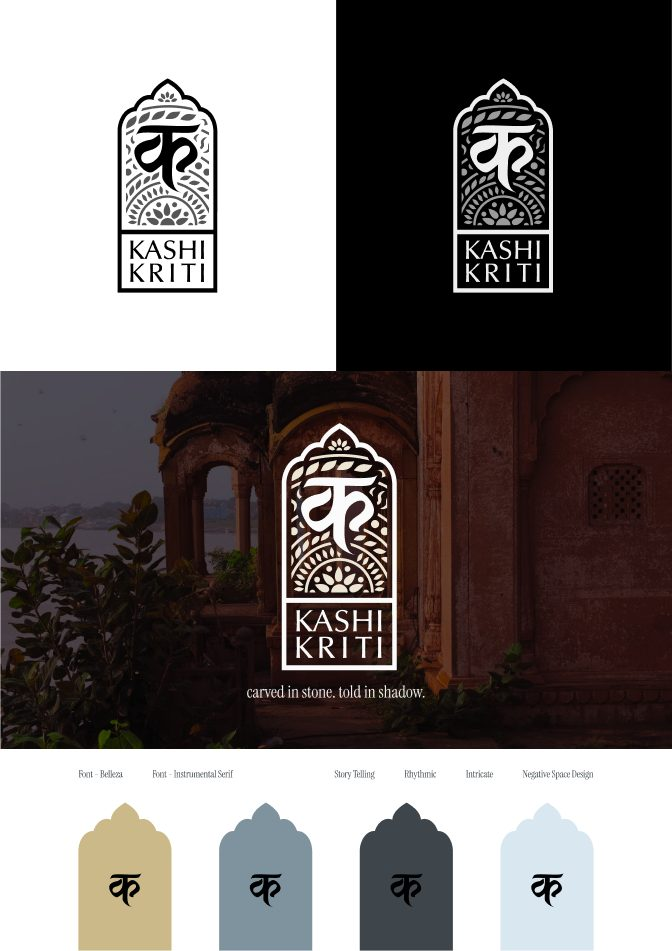
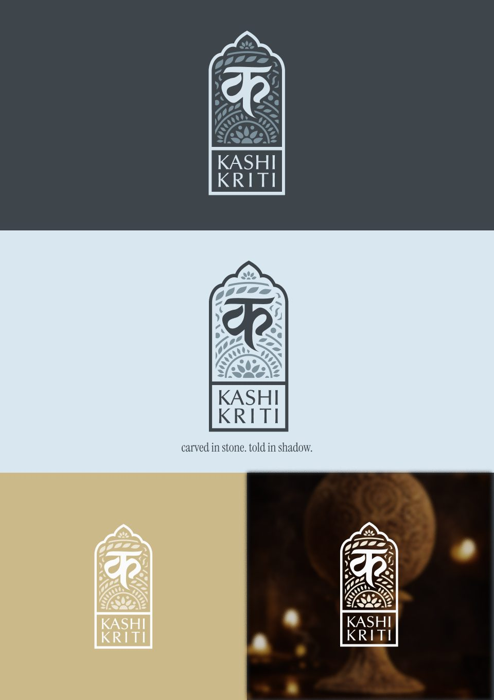
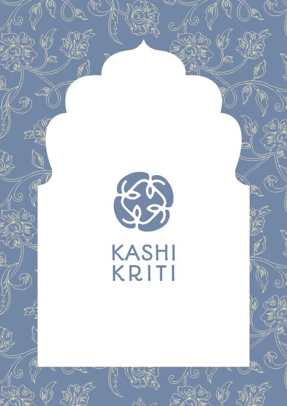
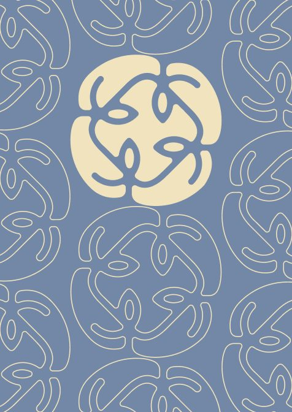
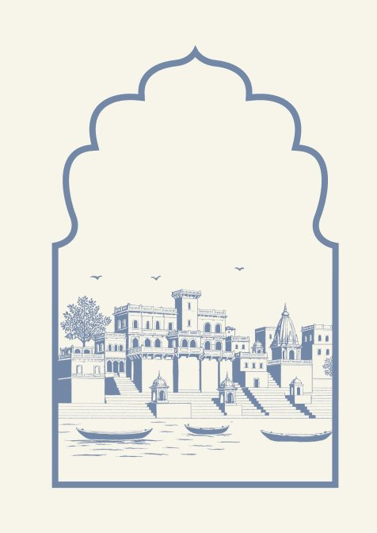
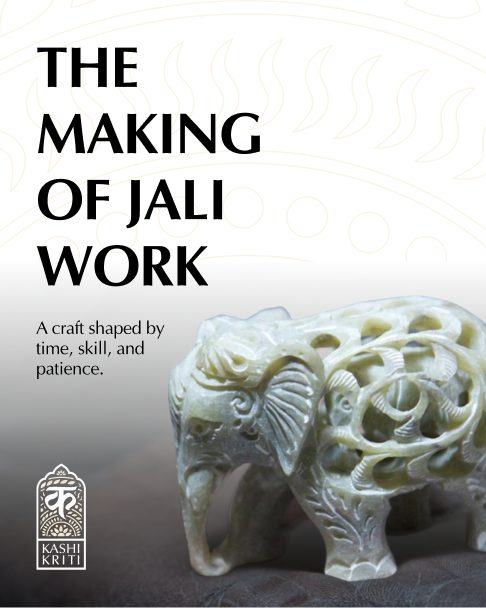
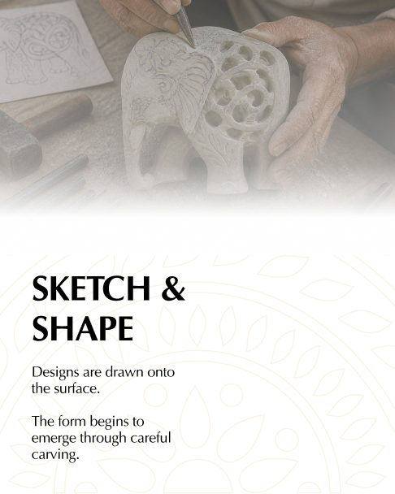
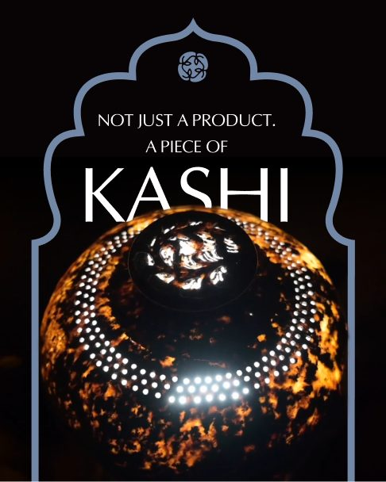

KASHIKRITI
Branding and packaging for
Varanasi's soft stone carvers

- Project
- Design project (DP-01)
- Craft
- Soft stone jaali work, Varanasi
- Role
- Research, naming, identity, packaging
- Deliverables
- Name, logo, packaging, posters, social series
Soft stone jaali is one of Varanasi’s oldest crafts, and most people in the city walk past it. KASHIKRITI gives the carvers a name and a look that carry the story of the work, from the workshop to the shelf.
Stone carved until light comes through.
Artisans shape soft soapstone into lamps, figures and screens, then drill tiny holes by hand to create jaali patterns of flowers, geometry and myth. The craft is recognised, but even in Kashi few people have seen how it is made.
- Marking and cuttingSlabs are measured and the base form is cut.
- Sketch and shapeDesigns are drawn on and the form is carved.
- Jaali carvingTiny holes are cut by hand to form the pattern.
- SmootheningFiles and sandpaper refine edges and detail.
- FinishingThe piece is polished and complete.
Kashi and kriti: a work of Kashi.
I gathered words around the craft and the city, from ghats and aarti to chisels and stone veins, and tested names including Saayakaar, Kashitva and KashiKraft. I chose KASHIKRITI (काशीकृति). In one word it says where the work comes from and what it is, and it reads in Hindi and English. The line beneath it is “Carved in stone. Told in shadow.”
A window carved around a letter.
The mark places the Devanagari letter क inside a jharokha arch, filled with leaf and lotus cut-outs like a jaali screen. It works on light and dark grounds. The palette comes from sandstone, slate and river light, set in Belleza with Instrumental Serif.


Packaging that frames the piece.
The packaging keeps the arch as a window onto the object, with a floral wrap pattern, a knot emblem drawn from jaali curves, and a line drawing of the ghats in river blue.



Light finds what we don’t.
A poster series sets the mark against the ghats and lanes of Varanasi. A social series explains how jaali is made and introduces the artisans behind it, including soft stone sculptors Kamlesh Kumar and Ramesh Kumar.


